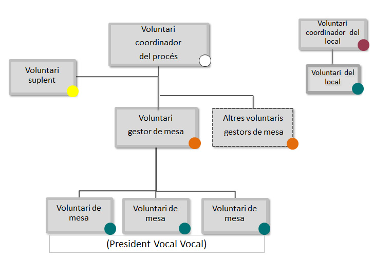

Voluntaris per a la jornada de participació ciutadana
|
Shan comunicat per correu electrònic les assignacions de les funcions com a voluntaris. Si et vas inscriure com a voluntari/ària i no tens el missatge que them enviat des de tuparticipes@gencat.cat a la safata dentrada, revisa la safata de correu brossa, spam o correu no desitjat. |
Moltes gràcies per la teva participació!
Agraïm la teva participació com a voluntari per a la jornada de participació ciutadana del proper 9 de novembre. Per assolir l’èxit d’aquest procés cal que hi hagi una bona organització i coordinació entre tots els voluntaris. Per això, convé conèixer bé l’organigrama, les funcions i les tasques assumides. La teva contribució serà clau perquè aquesta jornada sigui tot un èxit i es faci amb totes les garanties de seguretat, civisme i democràcia. Sense la teva implicació i el teu suport el 9N no seria possible.
Informació general
Tipus de tasques
El procés de participació compta amb diverses classes de voluntaris, en funció dels aspectes amb què estiguin relacionades les seves tasques:
Els locals on es participa
- Són els coordinadors del local i els voluntaris del local
El procés de participació
- Són els coordinadors del procés, els gestors de mesa, els membres de mesa –presidents i vocals– i els suplents
La recollida de dades o l’atenció d’incidències
- Són els operadors del Centre de Recollida d’Informació (CRI)
La gestió internacional del procés de participació
- Són els voluntaris dels centres de participació a l’exterior
Data, lloc i horari
Durant la jornada del 9 de novembre de 2014, els voluntaris duran a terme les seves tasques en el lloc i els horaris que sindiquen en cada cas en la informació específica per a cada classe de voluntari i que es reprodueix a continuació esquemàticament.
| Tasca | Lloc | Hora d'inici | Hora final |
|---|---|---|---|
| Coordinador/a del local | Local assignat | 7.30 h | Finalització jornada |
| Voluntari/ària del local | Local assignat | 7.30 h | Finalització jornada |
| Coordinador/a del procés | Local assignat | 7.30 h | Finalització jornada |
| Gestor/a de mesa | Local assignat | 8.00 h | Finalització jornada |
| Membres de la mesa | Local assignat | 8.00 h | Finalització jornada |
| Suplents | Local assignat | 8.00 h | Finalització jornada |
| Operadors del CRI | CTTI, Salvador Espriu, 45-51, Polígon Pedrosa - L'Hospitalet de Llobregat | 7.30 h | Finalització jornada |
Documentació
Per a la jornada de participació, els voluntaris han de dur la documentació següent:
El DNI
Una còpia del missatge electrònic rebut, amb la designació com a voluntari/ària
La informació general i específica continguda en aquest document
La documentació que hagin de dur de forma específica, d’acord amb les tasques assumides, que s’indica en cada cas (fulls de transmissió de dades, llistes de voluntaris, etc.)
Altres previsions
Tots els voluntaris han de portar el telèfon mòbil que van facilitar quan es van inscriure per tal que puguin ser localitzats. Es recomana dur la bateria del mòbil carregada al 100% i el carregador.
Per mantenir el clima d'imparcialitat necessari, és convenient que les persones del dispositiu no duguin cap peça de vestir, complement o emblema relacionats amb algun dels posicionaments que són objecte de la jornada de participació.
La participació com a voluntari no merita compensacions econòmiques de cap mena ni dóna dret a cap permís laboral.
Resolució dincidències
Incidències relacionades amb l’assistència o participació dels voluntaris
- En cas que un voluntari/ària hagi de comunicar qualsevol eventualitat, ho pot fer des de les 8 fins a les 20 hores, al telèfon 93 551 59 90. En el cas que vulgui comunicar qualsevol incidència el mateix dia 9 (en especial, la impossibilitat d’assistir-hi), ho pot fer al telèfon d’incidències 900 103 633.
- Correspon al coordinador/a del procés designar les persones que han de suplir els voluntaris que no hi hagin pogut assistir o participar. Si, per qualsevol motiu, la persona designada com a coordinador/a del procés no es presenta al lloc i a l’hora indicats, el coordinador/a del local o qualsevol altre voluntari/ària que ho detecti ho ha de comunicar immediatament al Centre de Recollida d’Informació (CRI) i esperar les indicacions corresponents.
- Les substitucions definitives dels membres de la mesa es recullen en l’acta.
- Les substitucions definitives d’altres voluntaris que no són membres de la mesa es comuniquen al CRI.
Incidències relacionades amb l’accés als locals
- Els voluntaris que es trobin amb problemes relacionats amb l’accés als locals de participació, ho han de comunicar al telèfon d’incidències 900 103 633.
Incidències durant la jornada de participació (meses, informàtica, ordre públic...)
- En el cas que les meses de participació no estiguin constituïdes a les 9 hores, el GESTOR/A DE LA MESA ho ha de comunicar al COORDINADOR/A DEL PROCÉS i al telèfon d’incidències 900 103 633.
- Si es produeix algun problema d’ordre públic dins el local de participació, cal comunicar-ho al COORDINADOR/A DEL PROCÉS, qui ho comunicarà als cossos de seguretat, si és necessari.
Informació d'interès
Tots els voluntaris assignats a un local hi podran participar encara que no sigui el que els correspon segons l'adreça del DNI, la qual cosa hauran de fer constar en l'acta a la fi de la jornada.
Tancament de la jornada
Al tancament de la jornada, i un cop realitzades totes les tasques específiques, us agrairem que col·laboreu a deixar ordenat el local de participació i dipositar tot el material sobrant i que no sigui reutilitzable en el contenidor corresponent.

Data d'actualització: 3/11/2014